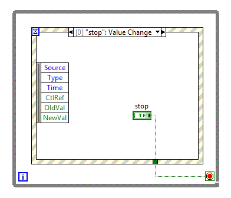

You must configure an Event structure case to handle a latched stop Boolean control. When using events with latched Boolean controls, you must place the control inside the event case for the mechanical action of a latched Boolean control to work correctly.
The following example shows the recommended way to handle a latched stop Boolean control in an Event structure. In this example, if a user clicks the stop button, the application stops running, and the latched stop Boolean control resets to FALSE.

The Event structure is inside a While Loop and a Value Change event case is configured for the latched stop Boolean control. When you run this application, the executions completes in the following order:
Using Events with Latched Boolean Controls
Ensure That Event Structures Handle Events whenever Events Occur